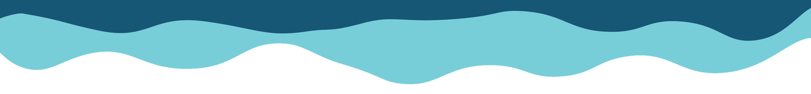

het verhaal
Plastic whale is een organisatie die zich inzet om plastic afval uit water te vissen. Ze zetten zich in om een echte verandering te maken: minder praten en meer doen!
Totdat er een concrete oplossing is willen ze hun eigen steentje alvast bijdragen. Want, alle beetjes helpen. Ik vind het bijzonder dat in een wereld waar vooral veel gepraat wordt en er maar weinig sprake is van actie, plastic whale dingen gewoon doet en daardoor al zo veel meer kan bereiken. Het lijkt mij ontzettend tof als meer mensen hun verhaal leren kennen en nog beter als ik mensen kan aansporen hun eigen steentje bij te dragen!
de cijfers
4,8-12,7
miljoen ton
plastic komt ieder jaar in de oceaan terecht
>150
miljoen ton
plastic drijft rond in de oceanen
56
procent
van al het plastic is na het jaar 2000 gemaakt
44
procent
van gebruikt plastic in de eu is verpakkingen
het duurt
450
jaar
voordat een plastic flesje wordt afgebroken
in 2023 zijn er door plastic whale
6531
zakken
plastic uit het water gehaald
dit is gelukt door de hulp van
12.417
mensen
van dat plastic zijn
10.196
stoelen
gemaakt voor kantoren